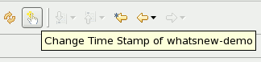

Development |
|
|
Quick redeploy/Touch descriptors |
Many application servers support redeploy of WAR and EAR's if there deployment descriptors files are updated. JST now includes an intelligent "touch descriptors" button which will change the timestamp for the relevant descriptor. With incremental publishing enabled (it is by default) this will then be automatically deployed and the applications server will automatically detect the change.  Note: The touch feature is intelligent enough to detect which descriptor to touch according to what type of project that is currently selected. e.g. if you are in WAR that is deployed into an EAR it will also touch the EAR's descriptors to ensure it is also properly restarted; if the WAR is not in an EAR only the war descriptors will be touched. Same procedure happens for EJB jar's. |